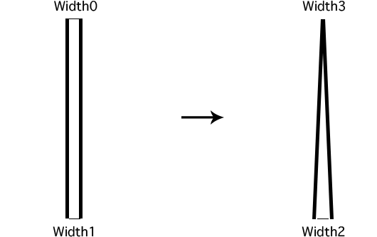
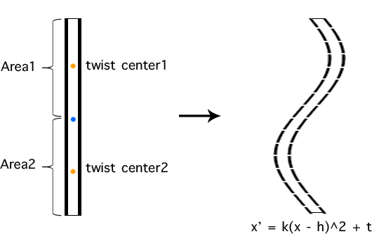
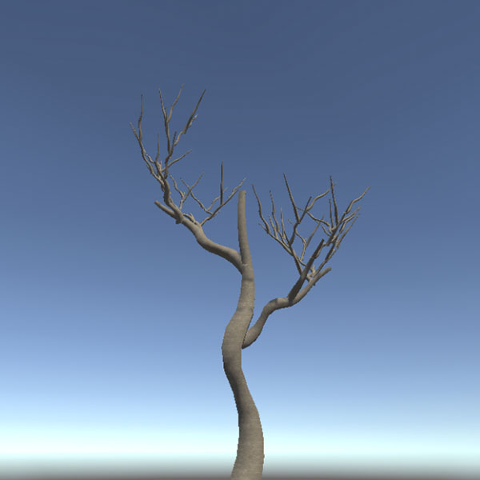
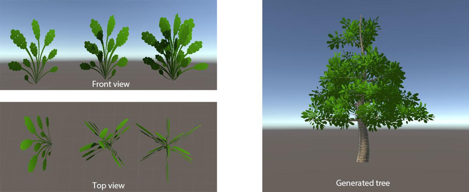
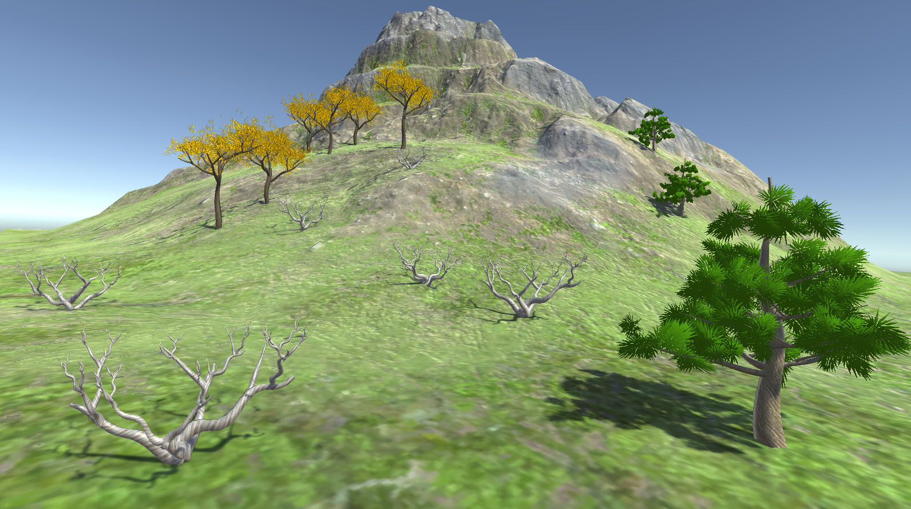

28 April, 2018
What to do: In game industry, the simulation of natural environment such as trees has been a challenging task. In many games, developers want their trees to look as natural as possible but at the same time won’t affect general rendering performance. Our group has decided to try building 3D trees based on fractal geometry. We would like to make a tree generator that allows users to chose the tree type, leaf, flower and branch density, etc. Our tree generator can be easily accessed through the Internet, so we considered using ThreeJS, which is based on OpenGL library. The main difficulty would be: tree structure development (getting all the angles and position of branches correctly), to model and render the branches well, and to successfully export it as a .obj or other sources of model file. We founded a few papers about tree simulation using L-system ( a method for generating fractals ). The official documentation for ThreeJS could also be helpful.
3 May, 2018
Initial version with WebGL: We started working on it with JavaScript. This was new to some of us, but it was pretty easy to learn. The basic tree structure was not hard to understand, we did have some trouble setting the 3D coordinates correct. The idea is to use a recursive function, each time we build a branch originated from a certain point, we set two (or even more, in the future) new points within this branch as new starter points, and recursively call the BuildBranch() function. Initially there was one branch, after first recursion, there would be 3 in total ( = 1 + 2), and after second recursion, there would be 7 ( = 1 + 2 + 4) branches, etc.
We had one problem when trying to calculate the origin points on sub-branches. We managed to solve this by adding 'helpers', which can also be seen as leaves, to the end point of a branch. Therefore when we move and rotate a branch, we move the helper along with it, since the helper is mere a point, it doesn't have complex shapes as the branch does, it would be much easier to obtain the coordinates. Eventually, everything seems to work well. Our next step was to improve the tree structure and add even more branches to it.
7 May, 2018
Feedback -- from ThreeJS to Unity3D: We recently received feedback about our project specification from Prof. Peters. Instead of using ThreeJS and develop a web application, he suggested us developing it inside Unity. We discussed about it, and thought it's a good idea. With Unity, our tree generator could be easily put into applications in games. Therefore, we moved what we've developed in JavaScript to C# in Unity. Our initial task was to build a 2D tree to have a look. Then we moved on to 3D fractal trees, which eventually works well.
15 May, 2018
Branch simulation: In order to make our tree branch look natural, we changed our initial cylinder shape branch into customized Unity mesh. With the new mesh we have, we could reshape (to twist) the branch so that they look real. In order to easily control all the mesh shapes, we built our branch model inside Unity using Mesh.
Here is how we sharpen and twist our branch:
  Adding Flowers and Leaves: Flowers and leaves are loaded from Assets/Resources, there are prefab format. The simple leaf and flower we use in our project is a plane mesh with specific material. Later we tried complex meshes such as follows:
17 May, 2018
Adding UI:
20 May, 2018
Finishing Demo Scene:
